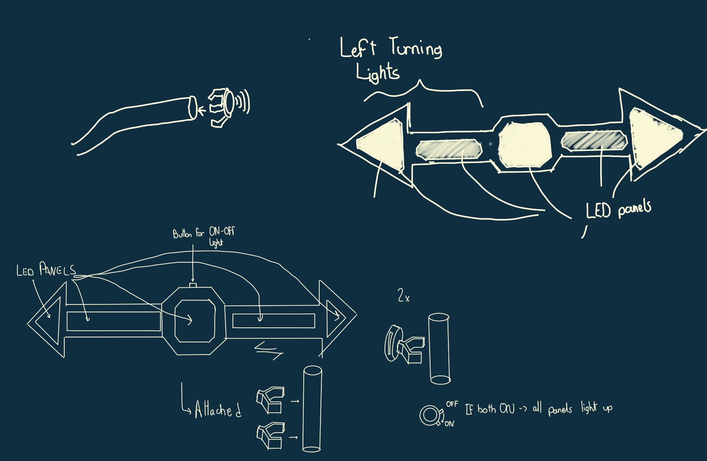
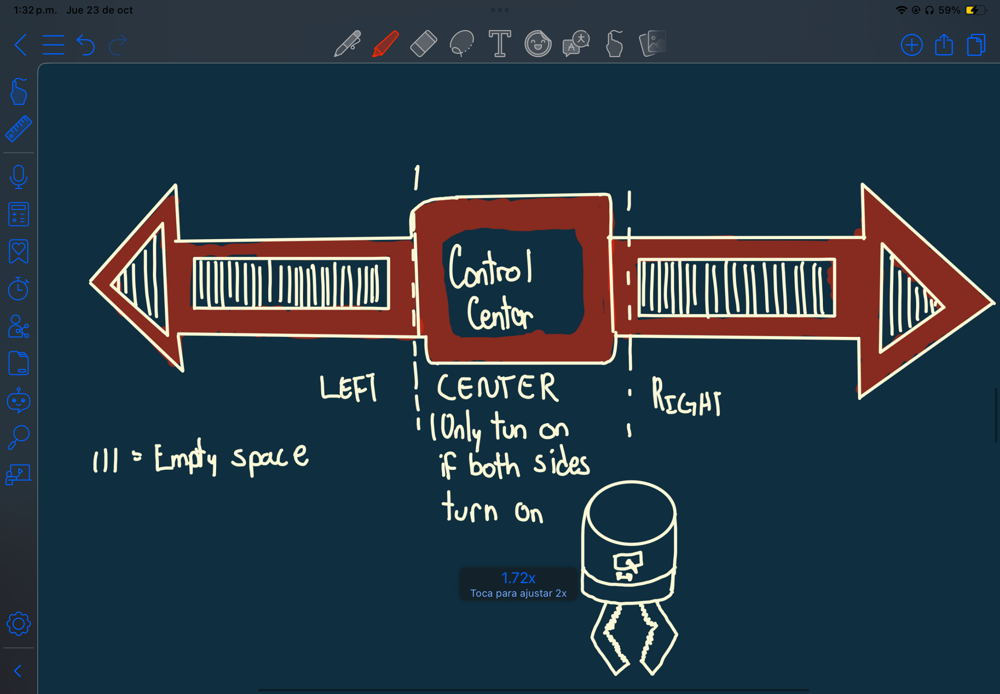

<div class="textcontainer">
<p class="margin"> </p>
<h3>Week 7: Electronic Outputs</h3>
<h5>This week we had to use the oscilloscope to analyze our circuits, the time domain they lived in, and the associated speed.
For this assignment I desided to resucitate my project from the previous week, the ultrasonic distance sensor that
lighted up a green LED when an object was less than 10 cm away from the sensor. At the beginning I faced some
difficulties because I forgot to ground the oscilloscope itself. However, after correcting that with Bobby's help,
I was able to get a coherent reading from the oscilloscope.
</h5>
<img src="Graph.jpg" alt="Exponential Behavior Graph" width="500" />
<h5>This graph, produced by the oscilloscope, let's us see that the time domain is within the seconds. The graph is
the result of triggering and untriggering the LED as fast as I could. The smallest interval is only 110 ms which
indicates that the time domain is really in the seconds rather than the miliseconds. Additionally, we can
observe the voltage around 3V when the LED turns on and around 0V when it is off. This is consistent with the circuit.
Lastly, since this is an input triggered system, it is evident that the system is not subject to any clock or similar device.
</h5>
<h3>Minimum Viable Product for my Bicycle Turning Signal System</h3>
<h5>In addittion to the oscilloscope assignment, this week we had our 'midterm', which was to construct a Minimum
Viable Product (MVP) for our final project. My final project consists of creating a turning signal system for my bike.
Consequently, for this week I decided to create a prototype of the turning signal system by creating the
right turning signal only.
</h5>
<h4>Motivation</h4>
<h5> Initially, my motivation for this was to create a more comfortable and safer biking experience for myself.
I am new to the area, and I bought a bike to get to and from the SEC (Science and Engineering Complex). When
I was brainstorming ideas for my final project, I wanted to come up with something that would cover a necessity.
That's how I came up with the idea of a turning signal system for my bike. When I bike, I often find myself in need
of making a turn and having to use hand signals.
</h5>
<h5> However, using hand signals is not the most comfortable or safest way to indicate a turn, specially at night.</h5>
<h5> This lead me to think about bike accidents and the most common causes. That's how I discovered that one of the
most common causes of bike accidents is failure of drivers to notice bikers (18% according to bikeattorney.com). And, even if we were to dress
as highlighters, it would be still difficult to indicate our turns appropriately.
</h5>
<h5> Therefore, I decided to create a turning signal system for my bike that would allow me to indicate my turns
more comfortably and safely. For this project, I would define success as being able to get noticed before making
a turn, specially at night. Adittionally, I want the gesture for turning the turning signal system on to feel natural
and not be yet another difficulty.</h5>
<h5> These are my original sketches and the video of a product I used for inspiration. Something I focused on doing different
from the video is that I did not want to have the switches clamped at the end of the handlebars because when I tried
the gesture biking it felt unatural and uncomfortable.</h5>

<video width="640" height="480" controls>
<source src="./Shortened.mp4" type="video/mp4">
</video>
<h4> Switch Case Design </h4>
<h5> As everything in engineering always does, this part required several iterations to get it right. I knew
that I wanted the most simple and comfortable switch possible, so I started looking for switches in the lab.
After looking around, I found a circular and traditional switch that I thought could work well. Consequently,
I used fusion to model it. The first I 3D-printed an oversized switch, which led me to reduce the size of the
switch. I tried the circular switch, but I realized that I needed to grab the whole switch to actually switch
the switch, which would not be ideal at the moment of biking. Consequently, I changed the switch to the traditional
one which was much more easier to switch and did not require me to grab the whole switch. Here is the progression
of the design and the final switch.
</h5>
<h5> Clamp Design </h5>
<h4>The other element of the switch was the clamping. I started by measuring the handle's shaft in order to make
the clamp a force fit. I designed the clamp in fusion, and I 3D printed it. However, I realized that the clamp was
too tight and ended up breaking it. Therefore, I increased the angle of the clamp to make it looser and reduced the infill
to increase flexibility. That time it worked perfectly, but I realied that the switch case required a circular base, not
a rectangular one, so that was the last iteration I made and the final version so far. Here is the profression of the design
in images:
</h4>
<h4>Base Plate</h4>
<h5>The base plate was quite straightforward since i was only looking for a tape to paste my LED strips and have
form of an arrow. Here is a photo of the baseplate:</h5>
<h4>Circuit</h4>
<h5>For the circuit I considered using an OLED screen since I instructed the ESP32 to send a signal to the RGB LED strip
and I inserted the switch in the power transmission so that when the switch was on, the LED's would light up and
vice versa. I used the Neopixel library to control the LED strip. Here is a photo of the circuit:</h5>
<h4>Here are snippets of my code</h4>
<img src="CodeSnippet1.png" alt="Code snippet 1" width="500" />
<h4>Final Prototype</h4>
<h5> After assembling all the components, I was able to create the final prototype of my turning signal system.
Here are some videos demonstrating the final prototype:</h5>
<video width="640" height="480" controls>
<source src="./edit.mp4" type="video/mp4">
</video>
<h5> These show the difference between hand signals and the turning signal system in a dark setting:</h5>
<video width="640" height="480" controls>
<source src="./Demo.mp4" type="video/mp4">
</video>
<video width="640" height="480" controls>
<source src="./DemoGood.mp4" type="video/mp4">
</video>
<h3>Lessons Learned</h3>
<h5> After assembling my protoype, I realized that I need a place to fit my microcontroller because it is currently
taped to the wheel frame. Additionally, I noticed that I am really satisfied with the project as a whole. I left
the switch attached for the week and so far I have not had any inconvenience using it; moreover, it feels natural.
Since I am happy with the MVP, I will proceed to create the left turning signal system eventually, and I am contemplating
the possibility of adding more features. So far I have come up with the 5 following ideas:
</h5>

<h5> As the semester goes on, I'll assess the feasibility of each. I hope to obtain recommendations for possible
additions to my project at the MVP presentation. I would also be interested in knowing if there are any special
type of RGN LED strips that would be more visible at night. I will discuss with the staff the possiblity of purchasing
waterproof powerful RGB LED strips, ideal for the rainy weather.
</h5>
<h5> The prototype used the following components:
<ul>
<li> Right switch mechanism</li>
<li> Right turning signal system wires</li>
<li> 3D printed Base for mounting LED's</li>
<li> Strip of LED's</li>
<li> 3D printed clamp mechanism for right switch</li>
<li> Related ESP32 and circuit </li>
<li> Lots of tape </li>
</ul>
</h5>
<h5></h5>
<h5> Here are some images of the prototype:</h5>
<h3>Key Takeaways</h3>
<h4>
<ul>
<li> Always ground the oscilloscope</li>
<li> When prototyping, a lot of things will change along the way</li>
<li> Always start at least 4 days in advance</li>
<li> Ask questions to the staff about which devices to use for specific tasks</li>
<li> Reducing infill slightly increases flexibility for 3D printed components</li>
</ul>
</h4>
</div>